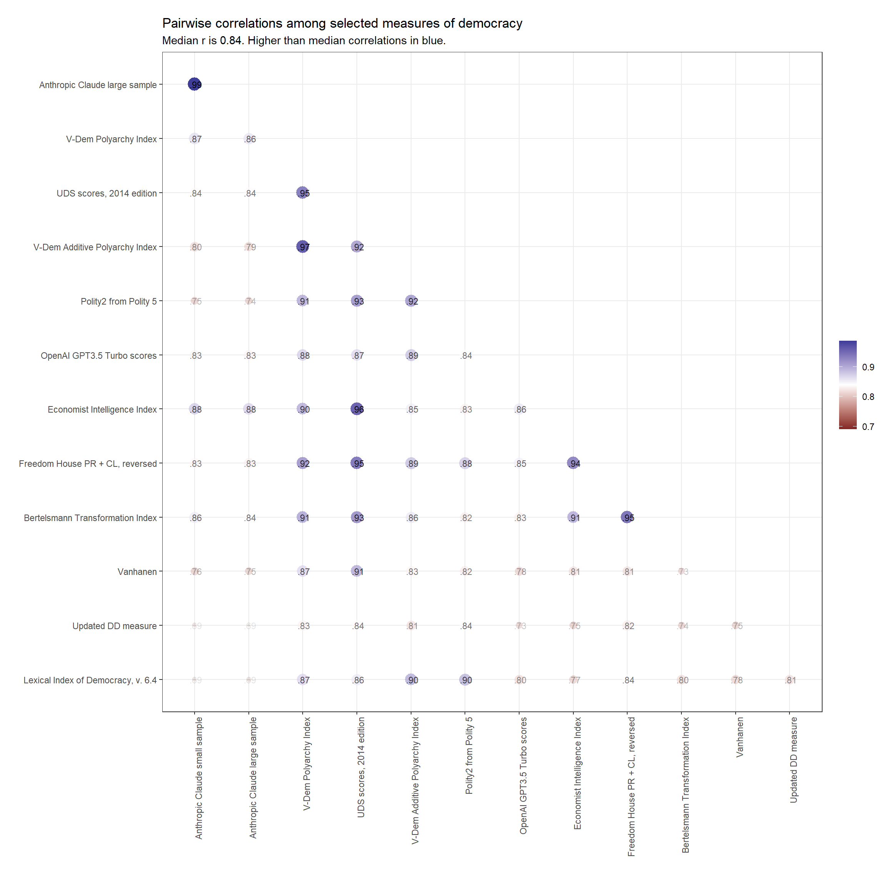
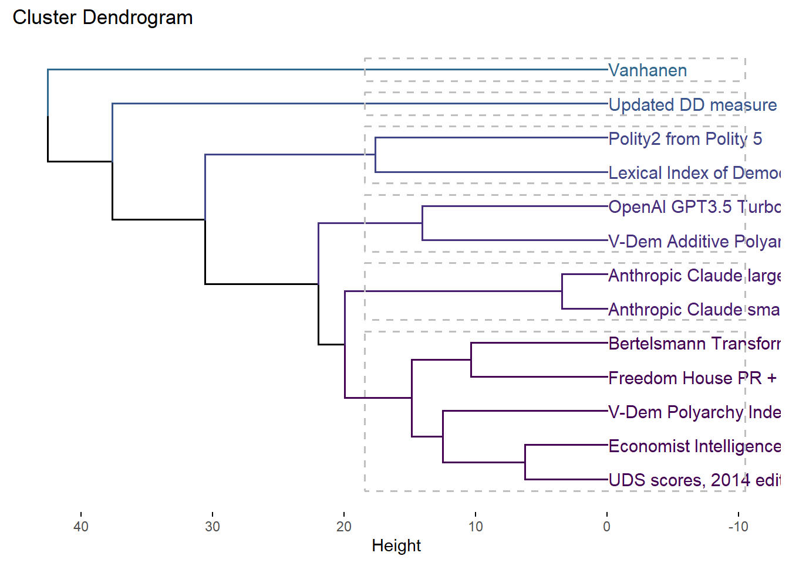
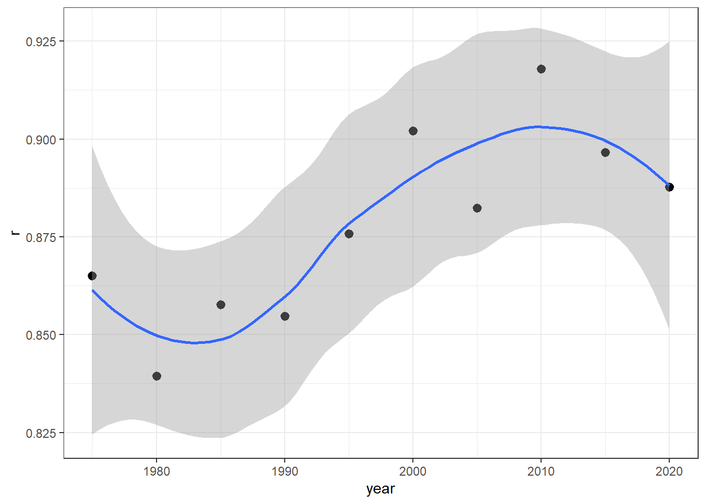
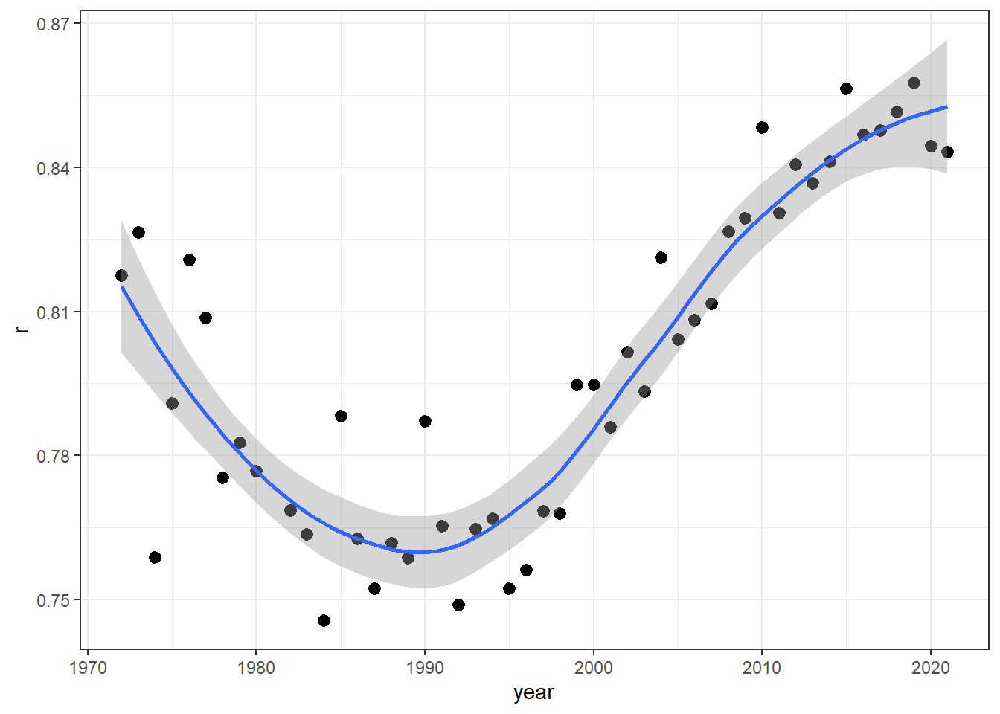
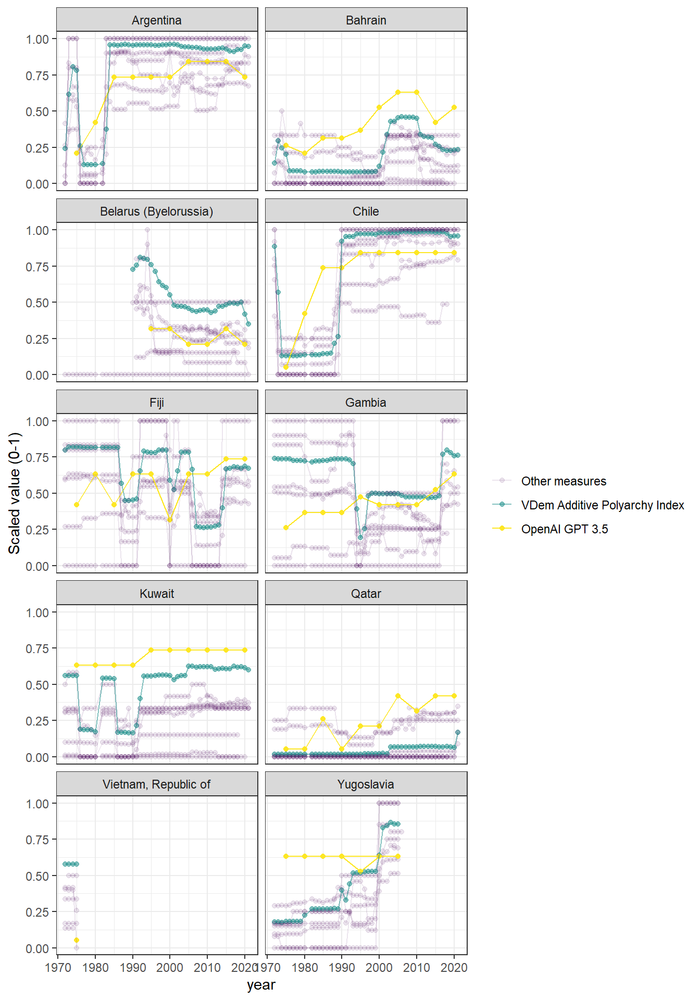
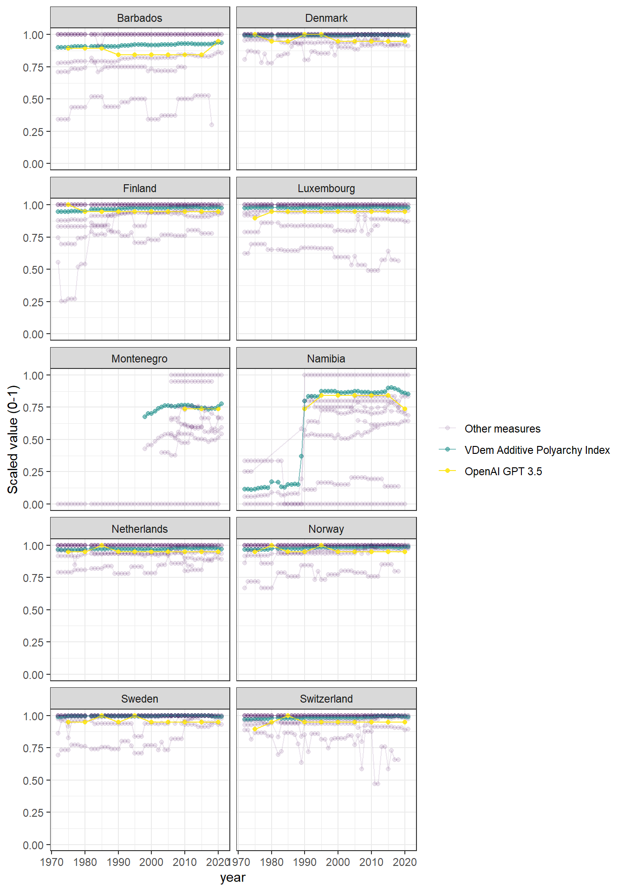
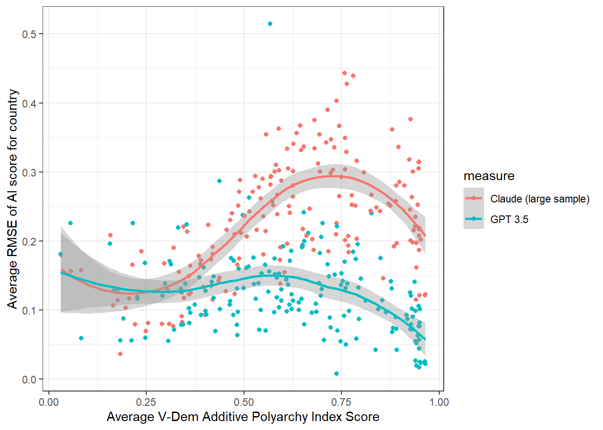
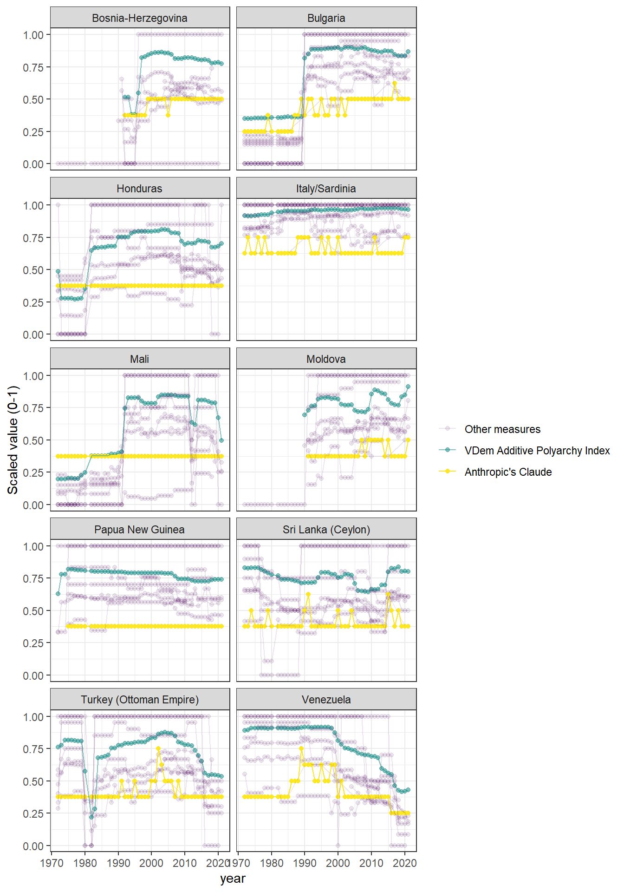
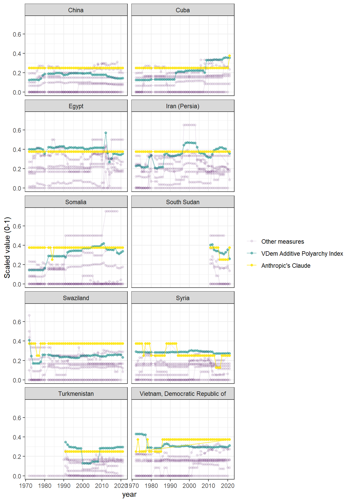
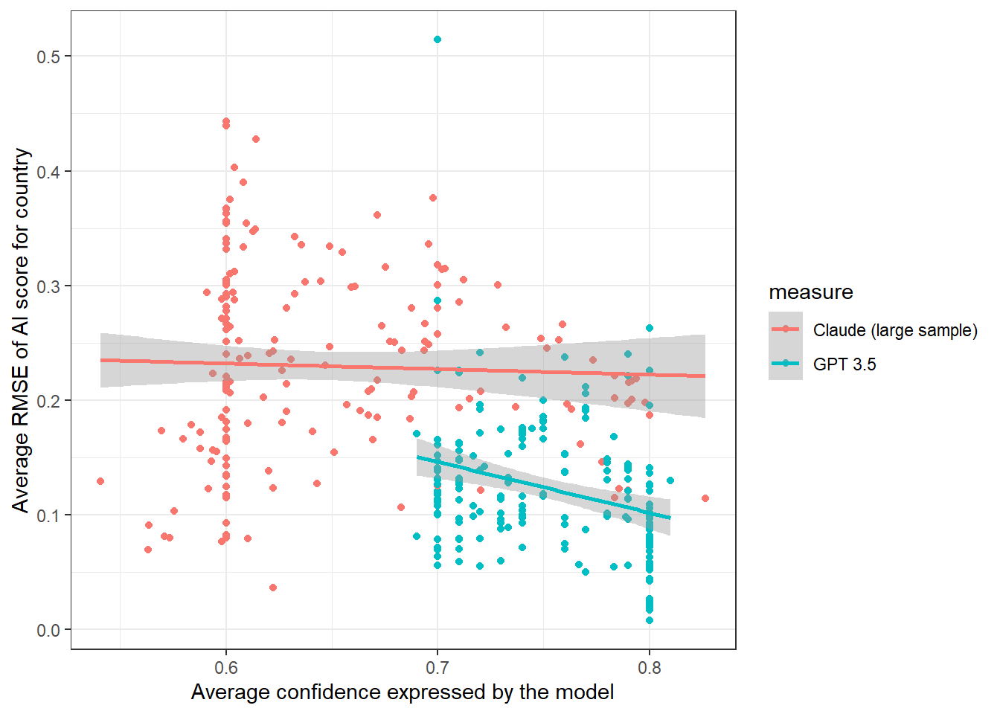

library(tidyverse)
library(democracyData) # Use remotes::install_github("xmarquez/democracyData")
library(openai)Using Large Language Models to generate democracy scores
Like many people, I’ve been playing recently with ChatGPT and other large language models, and I’ve found them very useful for many tasks. Inspired in part by a blog post by Ted Underwood on using GPT4 to measure the passage of time in fiction, I decided to use OpenAI’s ChatGPT (version 3.5-turbo) and Anthropic’s Claude (to which I recently got access) to see if I could replicate a democracy index.
This turned out to be surprisingly simple and cheap. I was able to produce thousands of country-year observations in a few hours, complete with justifications, at a very low cost (about $1.59 of usage for the OpenAI API for 1600 country-years; Claude is currently free for research uses). Though by no means perfect (and in some cases completely wrong), the index is a plausible measure of democracy, and can be usefully evaluated partly because the models provide justifications for their judgments. Moreover, the procedure described here can be extended to many other forms of data generation for political science.
The two models I used (ChatGPT and Claude) produced different judgments for some cases (as human coders would), and sometimes their justifications weren’t accurate, but overall I was impressed with the quality of their work. ChatGPT seemed to produce more accurate judgments (as measured by its correlation with the Varieties of Democracy Index and Freedom House data and its lower root mean square error), and the OpenAI API is more feature-rich, but Claude is currently free for research purposes, so it was relatively easy to use it to experiment and produce many more country-year observations (about 10,000, though that took about 12 hours given my current rate limits). I don’t have access to GPT4, so I can’t tell whether it would be better for this task, but my sense is that even GPT3.5 is very good already for this sort of task.
I provide replicable code in this repository using the `targets` package (though the repo is not stable - I’m still experimenting with it, and things are liable to change!), but follow along for an explanation and an evaluation of the results. If you want to skip the technical details of R code, just scroll down to the section on evaluation.
Setup
You will need a few packages and an API key from OpenAI (and an API key for Claude as well if you wanted to use that model instead).
Follow the instructions in the openai package to save your OpenAI api key in the appropriate environment variable.
Sample and Methods
The first thing to do is to set up the sample of countries that we want to generate democracy scores for. Here I use a sample from Freedom House, because it is fairly comprehensive for years after 1972, and I wanted to check how the generated scores compare to Freedom House. They are also more likely to contain country-years for which the models have information and which can be more easily checked by me due to their relative recency (doing historical research to establish the level of democracy in the more distant past is not easy!). And the dataset is not so large that it would take a very long time to code (even by ChatGPT, given my rate limitations). But in principle we could use any country-year panel data.
fh_data <- democracyData::download_fh(verbose = FALSE) |>
filter(year < 2021)fh_panel <- fh_data |>
select(fh_country, year) |>
filter(year %% 5 == 0, year < 2021)Note that since ChatGPT has a knowledge cutoff of 2021, it does not make sense to ask it to generate democracy scores for after that date. To keep costs low and be able to do some experimentation, I’m also only calculating the scores for 20% of all country years - here, simply the years that end in 0 and 5. (A full run of all 8850 country-years only costs about $8, but I did some trial-and error testing and some experimentation, and with a single API key coding 1807 country-years will in any case take about 6 hours to complete for the GPT3.5 API).
We also need to craft a good a prompt. The OpenAI API documentation for the Chat GPT models indicates that a prompt should have at leas one “system” message and one “user” message. The system message gives the system an identity to emulate (though OpenAI also notes that GPT3.5 does not always pay particular attention to the system message); the user message contains your instructions.
For the system message, I want to ChatGPT to emulate a political scientist as much as possible; my system message is:
“You are a political scientist with deep area knowledge of [country X]”
For the user message, I want to anchor ChatGPT’s answer to a particular conception of democracy; I use here V-Dem’s prompt for the question of whether a country is an electoral democracy:
The electoral principle of democracy seeks to embody the core value of making rulers responsive to citizens, achieved through electoral competition for the electorate’s approval under circumstances when suffrage is extensive; political and civil society organizations can operate freely; elections are clean and not marred by fraud or systematic irregularities; and elections affect the composition of the chief executive of the country. In between elections, there is freedom of expression and an independent media capable of presenting alternativeviews on matters of political relevance. (V-Dem Codebook v. 13, p. 45)
Note we could use a very different conception of democracy! (In fact, below I show some results using a different prompt based off the PACL dataset, which tends to produce somewhat better results). In any case, the full user message gives ChatGPT instructions for how to use this conception to answer the question of how democractic a country is:
“You are investigating the extent to which the ideal of electoral democracy in [country X] was achieved in [year Y]
The electoral principle of democracy seeks to embody the core value of making rulers responsive to citizens, achieved through electoral competition for the electorate’s approval under circumstances when suffrage is extensive; political and civil society organizations can operate freely; elections are clean and not marred by fraud or systematic irregularities; and elections affect the composition of the chief executive of the country. In between elections, there is freedom of expression and an independent media capable of presenting alternative views on matters of political relevance.
To what extent was the ideal of electoral democracy in its fullest sense achieved in [country X] in [year Y]?
Use only knowledge relevant to [country X] in [year Y] and answer in a scale of 0 to 10, with 0 representing “not at all” and 10 representing “completely”, and add a measure of your confidence from 0 to 1, with 0 representing “not confident at all”, and 1 representing “very confident”. Use this template to answer:
[country X] in [year Y]: number from 0-10, confidence: number from 0-1
We can generate all the prompts very quickly in a format appropriate for use with the {openai} package with this function call:
create_prompt <- function(fh_data) {
prompts <- purrr::map2(fh_data$fh_country, fh_data$year,
~list(
list(
"role" = "system",
"content" = stringr::str_c(
"You are a political scientist with deep area",
" knowledge of ", .x, ". ")
),
list(
"role" = "user",
"content" = stringr::str_c(
"You are investigating the extent to which the ",
"ideal of electoral democracy in ", .x,
" was achieved in ", .y, ". \n\nThe electoral ",
"principle of democracy seeks to embody the ",
"core value of making rulers responsive to ",
"citizens, achieved through electoral competition",
" for the electorate’s approval under ",
"circumstances when suffrage is extensive; ",
"political and civil society organizations can",
" operate freely; elections are clean and not ",
"marred by fraud or systematic irregularities; ",
"and elections affect the composition of the ",
"chief executive of the country. In between ",
"elections, there is freedom of expression and ",
"an independent media capable of presenting ",
" alternative views on matters of political ",
" relevance. \n\nTo what extent was the ideal ",
"of electoral democracy in its fullest sense ",
"achieved in ", .x, " in ", .y, "? \n\nUse only",
" knowledge relevant to ", .x, " in ", .y,
" and answer in a scale of 0 to 10, with 0 ",
"representing \"not at all\" and 10 representing",
" \"completely\", and add a measure of your ",
" confidence from 0 to 1, with 0 representing ",
"\"not confident at all\", and 1 representing ",
"\"very confident\". Use this template to answer:",
" \n", .x," in ", .y, ": number from 0-10, ",
"confidence: number from 0-1")
)
)
)
prompts
}
prompts <- create_prompt(fh_panel)We then send these prompts to the API and wait for results, using this function:
submit_openai <- function(prompt, temperature = 0.2, n = 1) {
res <- openai::create_chat_completion(model = "gpt-3.5-turbo",
messages = prompt,
temperature = temperature,
n = n)
Sys.sleep(7)
res
}
# This takes a few hours!
openai_completions <- prompts |>
purrr::map(submit_openai) Note that there are several parameters you can set when generating chat completions (see here for a full description), including the number of distinct responses generated per prompt (n), and the temperature parameter. Lower temperatures make the outputs “more deterministic” (though I don’t think the outputs are ever fully deterministic), and are recommended for analytical tasks; I set it at 0.2, somewhat arbitrarily.
I used the same prompt for Claude (the Anthropic model), but ran it twice - once with a smaller sample, and once with the full 8655 country-year observations in the Freedom House panel up to 2020.
My actual code wraps all of this in a `targets` pipeline (see here for details) so that if I got disconnected or whatever I would not have to pay again to get already-submitted prompts recalculated. After OpenAI and Claude are done, I did some data wrangling to get their responses in the right tabular form (not shown here; check out the repo for all the gory details), and voilá! Your democracy index is ready.
Here’s a random sample of the generated OpenAI scores:
| Country | Year | OpenAI's GPT3.5 score | Confidence | Justification |
|---|---|---|---|---|
| Cabo Verde | 2015 | 8 | 0.8 | In 2015, Cabo Verde held presidential elections that were widely considered to be free and fair. The electoral process was transparent, and there were no reports of significant irregularities or fraud. The opposition was able to campaign freely, and there was a robust media environment that provided diverse viewpoints. The elections resulted in a peaceful transfer of power from the incumbent party to the opposition, which is a hallmark of democratic governance. However, there were some limitations to the ideal of electoral democracy in Cabo Verde in 2015. While suffrage is extensive, there were some concerns about the accuracy of the voter registry. Additionally, while political and civil society organizations are generally able to operate freely, there were some reports of intimidation and harassment of opposition supporters during the campaign. Finally, while the elections affected the composition of the chief executive, there were some concerns about the concentration of power in the presidency. Overall, I am fairly confident in this assessment, but there may be some nuances that I am not aware of that could affect the score. |
| Kuwait | 1980 | 6 | 0.7 | In 1980, Kuwait held parliamentary elections, which were contested by a range of political groups. The suffrage was extensive, with both men and women allowed to vote. However, the political and civil society organizations were not entirely free to operate, as the government had imposed restrictions on political parties and civil society organizations. The elections were generally clean, but there were some reports of irregularities and vote-buying. The elections did affect the composition of the chief executive of the country, as the prime minister was appointed from among the elected members of parliament. In between elections, there was some freedom of expression, but the media was not entirely independent, as the government had imposed restrictions on the press. Overall, while the 1980 elections in Kuwait represented a significant step towards electoral democracy, there were still some limitations on political and civil society organizations, and the media was not entirely free. |
| Portugal | 2020 | 8 | 0.8 | Portugal in 2020 had a high level of electoral democracy. Suffrage was extensive, and political and civil society organizations operated freely. Elections were clean and not marred by fraud or systematic irregularities. The composition of the chief executive of the country was affected by the elections. In between elections, there was freedom of expression and an independent media capable of presenting alternative views on matters of political relevance. However, there were some challenges to the ideal of electoral democracy in Portugal in 2020. The COVID-19 pandemic affected the campaign and voting process, leading to some restrictions on campaigning and changes to the voting process. Additionally, there were concerns about the influence of money in politics and the lack of transparency in campaign financing. Overall, while Portugal achieved a high level of electoral democracy in 2020, there were some challenges that need to be addressed to ensure that the ideal is fully realized. |
And here’s a random sample from Claude:
| Country | Year | Anthropic's Claude score | Confidence | Justification |
|---|---|---|---|---|
| Iceland | 1988 | 7 | 0.8 | 7, confidence: 0.8, justification: In 1988, Iceland had extensive suffrage, regular free and fair elections, and an independent media with freedom of expression. However, political parties were entrenched in power and there were significant barriers to new parties emerging. Also, while the Prime Minister was democratically elected, the President still retained significant powers and was not directly elected by citizens. So, while the ideal of electoral democracy was largely achieved, there were some notable gaps relative to the fullest conception of electoral democracy. My confidence is moderately high given the available knowledge of Iceland's political system in 1988. |
| Belize | 1985 | 5 | 0.7 | 5, confidence: 0.7, justification: While Belize held its first free and fair elections in 1984 that peacefully transferred power to a new government, the ideal of full electoral democracy was not yet fully achieved in 1985. The political system was still consolidating, civil society and media were limited in their development, and the new government had only been in place for a year. However, the key milestone of a competitive election and transfer of power signaled progress toward the ideal, with opportunities for further democratic strengthening, hence my assessment of 5 out of 10 and moderately high confidence. |
| Vietnam, N. | 1974 | 2 | 0.6 | 2, confidence: 0.6, justification: The 1974 elections in Vietnam were the first national elections after the Paris Peace Accords and the establishment of a new constitution, but they fell far short of achieving the ideal of electoral democracy. The Vietnam Fatherland Front was the sole party allowed to contest elections, there were no independent media or political opposition, and the elections did not result in a transfer of power. However, this is based on my limited knowledge of Vietnam's political history, so my confidence in this assessment is moderate. A more in-depth analysis by a subject expert would likely result in a more confident and nuanced assessment. |
Are these democracy scores any good?
The short answer is that it depends on what you mean by “good”, and what you are looking for in democracy scores. I wouldn’t (yet) use them in research.
But they are about as highly correlated to major democracy scores as other scores are among themselves (if on the lower side). For example, in figure Figure 1, we see that all the AI generated democracy scores are correlated at an above-median level with the V-Dem polyarchy index, suggesting that the actual prompt (which uses the definition of electoral democracy used for the polyarchy index) mattered. They are also well correlated with the Economist Intelligence Unit’s Index, but somewhat less well correlated with Freedom House (though still better than the median correlation).

A simple hierarchical cluster analysis (Figure 2) confirms that the AI-generated scores (especially GPT3.5’s scores) are closest in their judgments to the Varieties of Democracy “additive polyarchy index” (a variant of the Polyarchy index).

These correlations vary across time and space, however. In Figure 3 and Figure 4, we see that these tend to be higher in more recent years and lower in the 1970s (though for Claude there’s a bit of a U shape).


We can also see where the AI-generated scores produce idiosyncratic judgments. Below, I calculate which countries have the highest and the lowest Root Mean Squared Errors (RMSE) between the scaled (0-1) AI score and the V-Dem Additive Polyarchy Index (Table 1).
| Country | Measure | RMSE |
|---|---|---|
| Vietnam, Republic of | openai_score | 0.5143684 |
| Yugoslavia | openai_score | 0.2870140 |
| Belarus (Byelorussia) | openai_score | 0.2627679 |
| Gambia | openai_score | 0.2574025 |
| Fiji | openai_score | 0.2417855 |
| Argentina | openai_score | 0.2404022 |
| Kuwait | openai_score | 0.2376547 |
| Chile | openai_score | 0.2260149 |
| Qatar | openai_score | 0.2258465 |
| Bahrain | openai_score | 0.2257749 |
The countries that GPT3.5 struggles with are also countries that other measures struggle with (Figure 5):

By contrast, GPT3.5 does especially well with established democracies (Table 2):
| Country | Measure | RMSE |
|---|---|---|
| Montenegro | openai_score | 0.0077905 |
| Luxembourg | openai_score | 0.0172377 |
| Netherlands | openai_score | 0.0196587 |
| Sweden | openai_score | 0.0224047 |
| Switzerland | openai_score | 0.0238658 |
| Norway | openai_score | 0.0246366 |
| Denmark | openai_score | 0.0253152 |
| Finland | openai_score | 0.0269316 |
| Namibia | openai_score | 0.0420851 |
| Barbados | openai_score | 0.0426295 |

Indeed, it’s clear that both models tend to struggle with countries with “hybrid” institutions (apparently democratic but with significant problems), which tend to be hard for human coders too, as is evident from Figure 7. But GPT3.5 struggles less!

In any case, Claude struggles with an entirely different set of countries than GPT3.5 ( Table 3).
| Country | Measure | RMSE |
|---|---|---|
| Papua New Guinea | claude_score_2 | 0.4430378 |
| Moldova | claude_score_2 | 0.4394731 |
| Venezuela | claude_score_2 | 0.4273270 |
| Sri Lanka (Ceylon) | claude_score_2 | 0.4030058 |
| Turkey (Ottoman Empire) | claude_score_2 | 0.3898271 |
| Italy/Sardinia | claude_score_2 | 0.3766120 |
| Bulgaria | claude_score_2 | 0.3753026 |
| Honduras | claude_score_2 | 0.3674681 |
| Bosnia-Herzegovina | claude_score_2 | 0.3663548 |
| Mali | claude_score_2 | 0.3624795 |
These are not quite as difficult for human coders to classify as the countries GPT3.5 struggles with (except perhaps for Bosnia-Herzegovina); it seems that Claude sometimes has a tendency to output a middle score when it encounters some evidence that not all is perfect with democracy (Figure 8). Moreover, it seems Claude still has difficulty detecting transitions (perhaps another reason it struggled with the 1990s, Figure 4).

By contrast, here are Claude’s best cases - most of them highly undemocratic and showing few changes, except for Somalia (Figure 9).

Overall, GPT3.5 has the edge in accuracy over Claude, with an overall RMSE relative to the V-Dem Additive Polity Index of 0.13 vs. 0.24 .
How good are AI Justifications?
There is also the question of the justifications they offer. I can’t evaluate them all - I don’t have appropriate knowledge - but I can spot-check the justifications offered for countries that I know something about, such as Venezuela. @venezuela-justifications-openai shows the Venezuela justifications from GPT3.5, and @venezuela-justifications-claude shows the Venezuela justifications from Claude.
| Country | Year | OpenAI's GPT3.5 score | Confidence | Justification |
|---|---|---|---|---|
| Venezuela | 1975 | 6 | 0.7 | While Venezuela held regular elections in 1975, there were concerns about the fairness of the electoral process. The ruling party, Acción Democrática, had a long history of using state resources to maintain its grip on power, and there were reports of vote-buying and other irregularities during the election. Additionally, the opposition parties faced restrictions on their ability to campaign and organize, and the media was not entirely free to report on political issues. However, it is worth noting that Venezuela in 1975 had a relatively high level of suffrage, and there were multiple parties competing in the election. Furthermore, the election did result in a change in the composition of the chief executive, with Carlos Andrés Pérez of the Democratic Action party winning the presidency. Overall, while there were significant limitations to the ideal of electoral democracy in Venezuela in 1975, there were also some positive aspects to the electoral process. |
| Venezuela | 1980 | 6 | 0.7 | While Venezuela held regular elections in 1980, there were some limitations to the ideal of electoral democracy. Suffrage was extensive, but there were some restrictions on voting rights for certain groups, such as illiterate citizens. Political and civil society organizations could operate freely, but there were some reports of harassment and intimidation of opposition groups. Elections were generally clean, but there were some allegations of irregularities and fraud. The elections did affect the composition of the chief executive, but there were some concerns about the concentration of power in the presidency. There was freedom of expression, but the media was not entirely independent and there were some restrictions on the press. Overall, while there were some positive aspects of electoral democracy in Venezuela in 1980, there were also some limitations. |
| Venezuela | 1985 | 6 | 0.7 | In 1985, Venezuela held presidential and parliamentary elections that were considered relatively free and fair. The suffrage was extensive, and political and civil society organizations were allowed to operate freely. However, there were some irregularities reported, including allegations of vote-buying and intimidation of voters. Moreover, the media was not entirely independent, and there were some restrictions on freedom of expression. The government controlled most of the media outlets, and there were reports of censorship and harassment of journalists critical of the government. Overall, while the elections in 1985 were relatively free and fair, there were some limitations to the ideal of electoral democracy in its fullest sense. |
| Venezuela | 1990 | 7 | 0.8 | In 1990, Venezuela held its first democratic presidential election in 16 years, which was considered a significant step towards achieving electoral democracy. The election was generally free and fair, with extensive suffrage and the ability of political and civil society organizations to operate freely. The election also resulted in the peaceful transfer of power from outgoing President Jaime Lusinchi to incoming President Carlos Andres Perez, demonstrating the importance of elections in affecting the composition of the chief executive of the country. However, there were some concerns about the election's cleanliness, with allegations of vote-buying and other irregularities. Additionally, while there was freedom of expression and an independent media, there were also reports of government censorship and intimidation of journalists. Overall, while Venezuela made significant progress towards achieving electoral democracy in 1990, there were still some areas for improvement. |
| Venezuela | 1995 | 7 | 0.8 | In 1995, Venezuela held presidential and congressional elections that were considered free and fair by international observers. The suffrage was extensive, and political and civil society organizations were allowed to operate freely. The elections were not marred by fraud or systematic irregularities, and they affected the composition of the chief executive of the country. However, there were some concerns about the independence of the media and the government's use of state resources to support the ruling party's campaign. Additionally, there were some reports of violence and intimidation during the campaign period. Overall, while Venezuela made significant progress towards achieving the ideal of electoral democracy in 1995, there were still some areas for improvement. |
| Venezuela | 2000 | 7 | 0.8 | In 2000, Venezuela held presidential elections that were considered generally free and fair by international observers. The suffrage was extensive, and political and civil society organizations were able to operate freely. The elections were not marred by fraud or systematic irregularities, and the results affected the composition of the chief executive of the country. However, there were some concerns about the independence of the media and freedom of expression. The government of President Hugo Chavez was known for its hostility towards critical media outlets, and there were reports of harassment and intimidation of journalists. Additionally, there were concerns about the impartiality of the National Electoral Council, which was responsible for organizing the elections. Overall, while the 2000 elections in Venezuela were generally considered to be free and fair, there were some concerns about the state of democracy in the country, particularly with regards to freedom of expression and the independence of the media. |
| Venezuela | 2005 | 6 | 0.7 | While Venezuela held elections in 2005, there were concerns about the fairness and transparency of the process. The opposition boycotted the parliamentary elections, citing concerns about the impartiality of the National Electoral Council and the lack of access to state media. Additionally, there were allegations of voter intimidation and manipulation of the electoral process by the government. However, it is important to note that Venezuela had a history of holding relatively free and fair elections prior to 2005. The country had a robust civil society and independent media, and there was a high level of political participation among the population. Overall, while the ideal of electoral democracy was not fully achieved in Venezuela in 2005, there were still some elements of democratic practice present. However, the concerns about the fairness of the electoral process and the lack of opposition participation suggest that there were significant limitations to the country's democratic practices at that time. |
| Venezuela | 2010 | 6 | 0.7 | While Venezuela held regular elections and had a relatively high level of suffrage, there were concerns about the fairness of the electoral process. The opposition claimed that the government used state resources to fund its campaign and that there were irregularities in the voter registration process. Additionally, there were reports of intimidation and violence against opposition candidates and supporters. While political and civil society organizations were allowed to operate freely, there were concerns about the government's treatment of opposition groups. The government used legal and administrative measures to limit the activities of opposition parties and civil society organizations. There were also concerns about the independence of the media. The government used its control over state media to promote its own agenda and limit coverage of opposition viewpoints. Private media outlets faced legal and administrative measures that limited their ability to report on political issues. Overall, while Venezuela held regular elections and had a relatively high level of suffrage, there were concerns about the fairness of the electoral process, the treatment of opposition groups, and the independence of the media. |
| Venezuela | 2015 | 5 | 0.7 | While Venezuela held parliamentary elections in 2015, which were deemed free and fair by international observers, there were significant challenges to the ideal of electoral democracy. The government under President Nicolas Maduro had a history of suppressing opposition voices and limiting freedom of expression, which continued in the lead-up to the elections. Opposition candidates faced harassment, intimidation, and even imprisonment, and the government-controlled media heavily favored the ruling party. Additionally, the electoral system itself was criticized for being opaque and vulnerable to manipulation, with allegations of voter fraud and irregularities. While the opposition was able to win a majority in the National Assembly, the government responded by stripping the assembly of its powers and creating a parallel assembly with loyalists. This undermined the principle of electoral competition and the ability of the electorate to hold their rulers accountable. Overall, while the 2015 elections were a step towards electoral democracy in Venezuela, there were significant challenges and limitations that prevented the ideal from being fully achieved. |
| Venezuela | 2020 | 2 | 0.8 | In 2020, Venezuela held parliamentary elections, which were boycotted by the main opposition parties, citing lack of electoral guarantees and transparency. The ruling party, led by President Nicolas Maduro, won a majority of the seats in the National Assembly, which was previously controlled by the opposition. However, the legitimacy of these elections was questioned by many international observers, who noted irregularities in the electoral process, including the lack of independent electoral authorities, the use of state resources to support the ruling party, and the exclusion of opposition candidates from the ballot. Furthermore, the political and civil society organizations faced significant restrictions and repression from the government, including the harassment and imprisonment of opposition leaders, journalists, and human rights defenders. The media was also subject to censorship and intimidation, limiting the freedom of expression and the ability of citizens to access alternative views. Overall, while there was an electoral process in place, the lack of transparency, impartiality, and freedom of expression and association, as well as the exclusion of opposition parties, significantly undermined the ideal of electoral democracy in Venezuela in 2020. |
| Country | Year | OpenAI's GPT3.5 score | Confidence | Justification |
|---|---|---|---|---|
| Venezuela | 1975 | 3 | 0.6 | 3, confidence: 0.6, justification: While Venezuela held relatively free and fair elections in 1975 that led to a transfer of power to a new president, the broader conditions of electoral democracy were not fully met. The media was not fully independent and subject to censorship/pressure. Civil society and political opposition groups faced restrictions and persecution. The new president also soon moved to consolidate power and curb democratic institutions. So, while the core act of elections was reasonably democratic, the broader conditions and principles of electoral democracy were only partially in place in Venezuela in 1975, hence my assessment of 3 out of 10 and moderate confidence in this assessment. |
| Venezuela | 1980 | 3 | 0.6 | 3, confidence: 0.6, justification: While Venezuela held relatively free and fair elections in 1978 that led to a peaceful transfer of power in 1979, the ideal of full electoral democracy was not achieved in 1980. The media was not fully independent, political opposition faced harassment, and the new government began consolidating power and curtailing civil liberties. However, the country had not yet descended into the authoritarianism that would emerge in the following decade. My confidence is moderate given the complex political dynamics at the time and limited public data available about the early 1980s in Venezuela. |
| Venezuela | 1985 | 3 | 0.6 | 3, confidence: 0.6, justification: While Venezuela held relatively free and fair elections in 1985 that led to a transfer of power to a new president, other aspects of electoral democracy were limited. The media was not fully independent and opposition parties faced some restrictions and harassment. Civil society organizations were limited in their ability to operate freely. As such, while the core aspect of elections was reasonably well-achieved, the broader ideal of electoral democracy with full freedoms and responsiveness was only partially realized in Venezuela in 1985, hence my assessment of 3 out of 10 with moderate confidence. |
| Venezuela | 1990 | 5 | 0.7 | 5, confidence: 0.7, justification: While Venezuela held its first democratic elections in decades in 1990 and power transferred peacefully to the elected president, the ideal of full electoral democracy was only partially achieved: - Media was not fully independent and subject to censorship/pressure under the outgoing regime - Civil society organizations were weak after years of authoritarian rule and political polarization remained high - There were some irregularities reported in the 1990 elections, though international observers deemed them largely free and fair - The new government did not fully establish the rule of law and consolidate democratic institutions, as evidenced by the coup attempt in 1992 So, while 1990 was a pivotal step toward democracy in Venezuela, the ideal was only partly realized at the time, in my assessment. The confidence level reflects some uncertainty due to limited information available. |
| Venezuela | 1995 | 5 | 0.7 | 5, confidence: 0.7, justification: While Venezuela held its first democratic elections after decades of military rule in 1993 and 1995, the ideal of full electoral democracy was only partially achieved. The elections were reasonably free and fair, and power was transferred peacefully, indicating some responsiveness to citizens. However, the media was still subject to significant political pressure and censorship, and civil society organizations faced harassment, limiting the open exchange of ideas. There were also significant inequalities in resources between the ruling party and others. So, while important milestones were reached, the ideal of full electoral democracy with extensive freedoms and clean elections was only partly achieved in 1995, in my assessment. |
| Venezuela | 2000 | 4 | 0.6 | 4, confidence: 0.6, justification: While the 2000 elections in Venezuela were free and fair with high voter turnout, the broader conditions for electoral democracy were only partially met. The media was not fully independent and opposition parties faced harassment. President Chavez had begun consolidating power and undermining checks and balances. So while the core electoral principle was largely upheld in 2000, the broader ideal of electoral democracy was only modestly achieved, hence my assessment of 4 out of 10 with medium confidence. |
| Venezuela | 2005 | 3 | 0.6 | 3, confidence: 0.6, justification: While the 2005 presidential election in Venezuela featured high voter turnout and President Chavez was re-elected in a process deemed free and fair by international observers, there were significant constraints on other aspects of electoral democracy. The opposition faced harassment and unequal access to state resources. The government had significant control and influence over the media, and there were concerns about the independence of the electoral council. Between elections, freedom of expression was increasingly constrained and political opposition faced difficulties operating freely. So, while the core aspect of elections was met, other key parts of the electoral democracy ideal were lacking, warranting a middling score in my assessment, with moderate confidence given the complex realities. |
| Venezuela | 2010 | 3 | 0.6 | 3, confidence: 0.6, justification: While Venezuela held elections in 2010 that were competitive and included extensive suffrage, other key aspects of electoral democracy were lacking. The political opposition faced significant restrictions and media was not independent, limiting alternative voices. There were also concerns about electoral irregularities and unfair advantages for the incumbent president. So, while some principles of electoral democracy were in place, many were not fully achieved, warranting a middling score with moderate confidence given the complex realities. A fuller assessment would require more in-depth analysis of events and conditions in Venezuela in 2010. |
| Venezuela | 2015 | 3 | 0.6 | 3, confidence: 0.6, justification: While Venezuela held elections in 2015 that were formally free and fair with high turnout, the electoral process did not embody the full ideal of electoral democracy. The political opposition faced severe restrictions and the government dominated the media landscape, limiting alternative views. Independent political and civil society organizations faced harassment. The executive under Maduro also took steps to consolidate power and undermine other branches of government. So, while the formal trappings of democracy were in place, the conditions for a fully responsive and competitive electoral process were lacking. My confidence is moderate given the complex realities in Venezuela and limitations of available data. |
| Venezuela | 2020 | 2 | 0.6 | 2, confidence: 0.6, justification: While Venezuela held legislative elections in 2020 that were nominally competitive, the electoral process was marred by systematic irregularities, abuse of state resources by the incumbent party, and suppression of opposition political and civil society groups. The chief executive, President Maduro, retains power through undemocratic means. There is little independent media or freedom of expression. So while the ideal of electoral democracy was weakly met in a nominal sense, in practice the core values were not achieved. My confidence is moderate given the complex realities in Venezuela and some uncertainty in assessing the extent of undemocratic practices. |
There are pros and const to both. GPT3.5 hallucinates Venezuelan election dates; presidential elections happened in 1973, 1978, 1983, 1988, 1993, 1998, 2000, 2005, 2010, 2015, and 2020, but GPT 3.5 asserts they happened in 1975 (no such election), 1980 (again, no such election), 1985 (no election), and 1995 (no election). But the election of 1973 did result in Carlos Andrés Pérez winning the presidency, and though the score is a bit harsh the overall assessment for 1975 does not strike me as altogether implausible. The 1980 justification is bit more vague, but again (aside from the fact that the election was held in 1978, not 1980) not altogether implausible. GPT3.5 also weirdly says that “In 1990, Venezuela held its first democratic presidential election in 16 years”, which is silly (the election happened in 1988; there had been lots of elections in the preceding 16 years), though it does get the transfer of power from Lusinchi to Carlos Andrés Pérez correct (for 1988) and the overall assessment seems reasonable. The 1998 election was won by Chávez, who ran as the incumbent in 2000; the assessment seems reasonably accurate (but the score is high relative to earlier years with similar concerns). 2005, 2010, 2015, and 2020 seem reasonably ok justifications, with specific detail that is basically correct.
Claude’s justifications are briefer less confident. Like GPT3.5, it also hallucinates some election dates (e.g, for 1975, 1985) but gets other dates correct (it knows there were elections in 1978, and uses that information to talk about the situation in Venezuela in 1980). Like GPT3.5, it makes the claim that “Venezuela held its first democratic elections in decades in 1990” – there must be something in the training data for both models that makes them think that - but worse, it repeats the claim for 1995, embellishing it with a weirder claim about decades of military rule (“Venezuela held its first democratic elections after decades of military rule in 1993 and 1995”). Claude is also significantly (and often without good reason) harsher than GPT 3.5 in its scoring.
If the Venezuela case is indicative of the quality of the justifications, the models still have a ways to go. (Perhaps GPT4 would do better; I’m itching to test it once I get access). I’ve spot-checked a few other justifications and they are often very convincing, but I imagine problems like hallucinating the dates of elections may persist for a while.
I asked both models to give estimates of their uncertainty. Claude was more likely to express genuine uncertainty (including very low confidence scores) and to say it didn’t know; indeed, for a few country-years (San Marino, for example) it simply refused to answer the prompt, saying it didn’t have enough knowledge. By contrast, GPT3.5 never gave a confidence score lower than 0.7. In any case, neither model’s confidence was clearly related to their RMSE from the V-Dem Additive Polyarchy Index (Figure 10), though GPT3.5 still seems slightly better calibrated (with a declining trend line, with higher confidence for countries with a lower RMSE). Nevertheless, Claude does show an interesting pattern: the range of its RMSE is larger when it expresses lower confidence, which seems right (its judgments being more random).

I also used Claude to code countries twice (once for a smaller sample, once for a larger sample). While it mostly coded countries similarly, in a few cases (136 country-years out of 1800 common country-years) it came up with new scores. The scores never changed much (almost always just 1 point out of 10); the largest change was 2 points, for 3 country years. (Perhaps a higher temperature setting would lead to more such changes). In this sense Claude is an unusually consistent coder; even the three country-years below are ambiguous, and I could have gone either way, though Claude does seem rather harsh in its judgments.
| Country | Year | Claude score (small sample) | Claude score (large sample) | Justification (small sample) | Justification (large sample) |
|---|---|---|---|---|---|
| Kiribati | 2020 | 5 | 3 | 5, confidence: 0.6, justification: While Kiribati held generally free and fair elections in 2020 with high voter turnout, the political opposition faced restrictions and the ruling party dominated state institutions. The media environment is somewhat constrained and there are concerns about corruption. So, while some aspects of electoral democracy were achieved, the ideal was not fully realized in its fullest sense. My confidence is moderate given the limited public information available about the 2020 elections and political conditions in Kiribati. | 3, confidence: 0.6, justification: While Kiribati held generally free and fair elections in 2020 with a peaceful transfer of power, the ideal of electoral democracy was limited by a lack of strong independent media and political opposition, as well as concerns over executive influence and corruption. The new government has promised reforms, but the extent to which these will strengthen democracy remains to be seen. My confidence is moderate given the limited public information available about the state of democracy in Kiribati and the inherent challenges of assessing how well an ideal is achieved in practice. |
| Spain | 1975 | 6 | 4 | 6, confidence: 0.7, justification: While the transition to democracy in Spain led to the first free elections in over 40 years in 1977, the political conditions in 1975 were not yet fully conducive to an ideal electoral democracy. Censorship and limits on free expression were still in place in 1975, and political organizations were still restricted. However, the death of Franco in 1975 and the resulting power vacuum did allow for some increased openness, and the major reforms enacted in the subsequent two years put Spain on a path towards a more fully realized electoral democracy, though more time was needed to consolidate democratic institutions and norms. My confidence in this assessment is moderately high given available historical knowledge on this period in Spain, though more in-depth research could refine the assessment. | 4, confidence: 0.6, justification: While the transition to democracy in Spain led to the first free elections in over 40 years in 1977, the political situation in 1975 was still fragile and the ideal of full electoral democracy had not yet been achieved. Censorship and restrictions on civil liberties were still in place in 1975, the media was not fully independent, and there were still fears of interference by factions of the old regime. However, the path to democracy was underway, and the major political forces had agreed to a roadmap for democratization. Hence my assessment of 4 out of 10 for how close Spain was to the ideal of full electoral democracy in 1975, with medium confidence in this assessment. |
| Tonga | 2010 | 5 | 3 | 5, confidence: 0.7, justification: The 2010 elections in Tonga were the first with universal suffrage and marked a step towards greater democracy. However, the media and civil society's ability to operate freely was still limited, and the king and nobility still retain significant political influence. The election was also marred by some irregularities. While the 2010 elections represented progress, the ideal of full electoral democracy was not yet achieved in Tonga in 2010, though this assessment comes with moderate confidence given my limited knowledge about the specific circumstances in Tonga at that time. | 3, confidence: 0.6, justification: While Tonga held its first democratic elections with universal suffrage in 2010, the ideal of full electoral democracy was only partially achieved. The media was not fully independent and free from political pressure. The electoral process was marred by some irregularities and fraud. And while the new Prime Minister came to power via elections, the King and nobility still wield significant political influence. So, while the 2010 elections represented progress, the ideal of full electoral democracy with responsive and competitive elections was only partly realized in Tonga at the time. |
Further Uses
The V-Dem project already exists and publishes annually updated estimates of democracy scores, complete with component indicators and all index subcomponents. While using ChatGPT to replicate these scores does not add much value right now, it seems clear to me that over time it will become more and more feasible to use these models to generate political science data. Given the pace of change in this field, I wouldn’t bet against these models become more and more important to produce at least quick and dirty data, especially in a hybrid model where experts review the AI’s judgments. For example, I am currently working on generating data that extends the Geddes, Wright, and Frantz classification of non-democratic regimes; it would be cool if this worked well. And I’m also experimenting with other prompts, including one based on the DD dataset, which seems to work relatively well to produce dichotomous measures of democracy. Indeed, one could imagine coding many of the indicators of the V-Dem project in this way, and then comparing the AI judgments to expert judgments.
Of course, this may all be “test-set leakage”. But the work of generating historical data is basically summarization, and this is a task for which very large models trained on ALL OF THE TEXT are likely to be very good at; I want them to memorize what scholars say about elections and put it in nice tabular form for me!
Data and Code
I’ve made the final scores and justifications generated by both models (GPT3.5 and Claude) available here for people interested in analyzing them further.